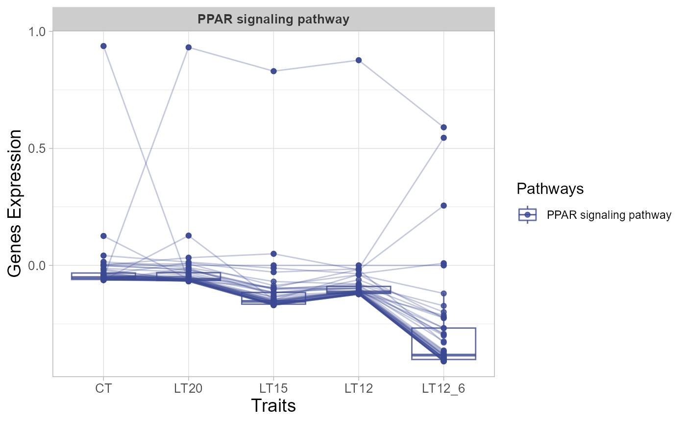
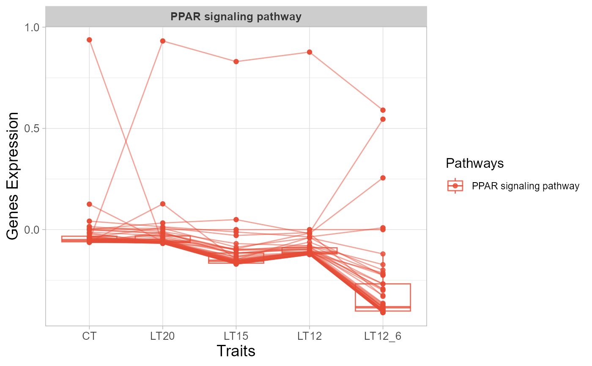

Trend plot for visualizing gene expression trend profile in multiple traits.
Source:R/trend_plot.R
trend_plot.RdTrend plot for visualizing gene expression trend profile in multiple traits.
Usage
trend_plot(
data,
scale_method = "globalminmax",
miss_value = "exclude",
line_alpha = 0.5,
show_points = TRUE,
show_boxplot = TRUE,
num_column = 2,
xlab = "Traits",
ylab = "Genes Expression",
sci_fill_color = "Sci_AAAS",
sci_fill_alpha = 0.8,
sci_color_alpha = 0.8,
legend_pos = "right",
legend_dir = "vertical",
ggTheme = "theme_light"
)Arguments
- data
Dataframe: include columns (Gene, Trait1, Trait2, ..., Pathway), rows (Genes).
- scale_method
Character: data scale methods. Default: "globalminmax" (global min and max values), options: "std" (standard), "robust", "uniminmax" (unique min and max values), "globalminmax", "center", "centerObs" (center observes).
- miss_value
Character: deal method for missing values. Default: "exclude", options: "exclude", "mean", "median", "min10", "random".
- line_alpha
Numeric: lines color alpha. Default: 0.50, min: 0.00, max: 1.00.
- show_points
Logical: show points at trait node. Default: TRUE, options: TRUE, FALSE.
- show_boxplot
Logical: show boxplot at trait node. Default: TRUE, options: TRUE, FALSE.
- num_column
Logical: column number. Default: 2, min: 1, max: null.
- xlab
Character: x label. Default: "Traits".
- ylab
Character: y label. Default: "Genes Expression".
- sci_fill_color
Character: ggsci color pallet. Default: "Sci_AAAS", options: "Sci_AAAS", "Sci_NPG", "Sci_Simpsons", "Sci_JAMA", "Sci_GSEA", "Sci_Lancet", "Sci_Futurama", "Sci_JCO", "Sci_NEJM", "Sci_IGV", "Sci_UCSC", "Sci_D3", "Sci_Material".
- sci_fill_alpha
Numeric: ggsci fill color alpha. Default: 0.50, min: 0.00, max: 1.00.
- sci_color_alpha
Numeric: ggsci border color alpha. Default: 1.00, min: 0.00, max: 1.00.
- legend_pos
Character: legend position. Default: "right", options: "none", "left", "right", "bottom", "top".
- legend_dir
Character: legend direction. Default: "vertical", options: "horizontal", "vertical".
- ggTheme
Character: ggplot2 themes. Default: "theme_light", options: "theme_default", "theme_bw", "theme_gray", "theme_light", "theme_linedraw", "theme_dark", "theme_minimal", "theme_classic", "theme_void"
Examples
# 1. Library TOmicsVis package
library(TOmicsVis)
# 2. Use example dataset
data(trend_data)
# 3. Default parameters
trend_plot(trend_data)
# 4. Set scale_method = "std"
trend_plot(trend_data, scale_method = "std")

# 5. Set miss_value = "mean"
trend_plot(trend_data, miss_value = "mean")

# 6. Set line_alpha = 0.30
trend_plot(trend_data, line_alpha = 0.30)
 # 7. Set sci_fill_color = "Sci_IGV"
trend_plot(trend_data, sci_fill_color = "Sci_IGV")
# 7. Set sci_fill_color = "Sci_IGV"
trend_plot(trend_data, sci_fill_color = "Sci_IGV")